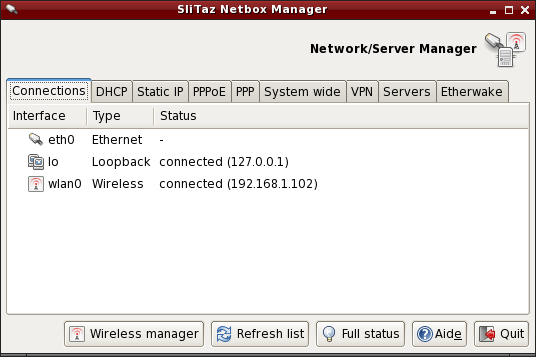

Configuração de rede
- Sobre Redes
- Netbox - Configurarão de rede.
- Wifibox - Configuração de Redes sem Fio.
- /etc/hostname - Nome do Host.
- /etc/network.conf - Arquivo de Configuração da Rede.
- IP Dinâmico - Cliente DHCP udhcpc.
- IP Estático - Usando um endereço específico.
- PPPoE kernel-mode - Conexão discada em modo-Kernel.
- PPPoE com o rp-pppoe - Conexão ADSL.
- Instalação de driver de uma placa de rede - Encontre e carregue módulos do Kernel.
- Firewall - Gerenciamento do Firewall (Iptables).
Sobre Redes
Por padrão o SliTaz executa, no momento do boot, um cliente DHCP (udhcpc) no
eth0. Se a sua placa de rede for identificada como sendo de interface
eth0 e se você usar um roteador, sua conexão provavelmente estará
funcionando. O DHCP é configurado dinamicamente: a cada boot o cliente requisita
do servidor DHCP um novo endereço IP, o qual é integrado ao roteador ou a outro
computador. Se for necessária a utilização de um IP estático, pode-se editar
diretamente os arquivos de configuração ou usar o aplicativo gráfico
netbox disponível no menu JWM --> System tools. Em um terminal
ou no console Linux você pode listar todas as interfaces de rede disponíveis
com o comando ifconfig seguido da opção -a:
$ ifconfig -a
Para mostrar a tabela de roteamento de IP do Kernel, você pode usar o comando
route sem nenhum argumento:
$ route
O arquivo de configuração de rede principal é o /etc/network.conf.
Ele pode ser graficamente configurado com o netbox ou editado
diretamente pelo administrador root.
Netbox - Configure a rede
O Netbox é um pequeno aplicativo GTK+ que configura a interface de rede usando DHCP ou um endereço IP estático. As abas podem ser usada para iniciar/parar conexões e mudar automaticamente o valor dos arquivos de sistema. Ele provê uma aba geral de sistema pela qual pode-se editar diretamente os arquivos de configuração de rede, e abas para configurar nomes de usuário e senhas para conexões PPP/PPPoE. Servidores como SSH, DHCP, PXE e DNS também podem ser configurados por este aplicativo e é possível criar a própria rede privada virtual (VPN) utilizando-se as ferramentas disponíveis.
Pode-se iniciar o netbox a partir do menu das ferramentas do sistema ou pelo terminal:
$ subox netbox
Wifibox - Utilitário Gráfico para Configuração de Redes Sem Fio
O Wifibox é uma interface para configurar uma conexão de rede (Wifi, WLAN ou Wireless). A aba "Networks" mostra uma lista de redes disponíveis, para conectar a uma delas basta um duplo clique sobre o nome da rede. Se a rede é segura, uma chave de acesso será então solicitada.

A aba "Favorites" permite configurar as redes preferidas. Uma vez que a rede tenha sido adicionada, pode-se clicar duas vezes sobre o nome da rede para iniciar a conexão. A aba "Configuration" permite configurar a conexão manualmente usando configurações avançadas como o modo (mode) ou canal (channel). A aba "Drivers" permite configurar a placa de rede; há 3 opções:
- A placa é suportada diretamente pelo kernel por meio de um módulo.
- A placa precisa de um módulo e de um firmware não livre que pode ser instalado automaticamente pela ferramenta de auto-detecção (tazhw).
- A placa não é suportada pelo Linux e drivers para o Windows devem ser instalado pelo gerenciador de drivers para Windows (tazndis).
/etc/hostname - Nome do Host
O arquivo /etc/hostname configura o nome da máquina. Ele é carregado durante a inicialização do sistema com o comando 'hostname', sem argumentos este comando retorna o nome atual da máquina:
$ hostame
Para mudar o nome de host, pode-se usar o comando echo ou
um editor de texto disponível no SliTaz (como root). Exemplo usando o
comando echo e com o nome de máquina kayam:
# echo "kayam" > /etc/hostname
/etc/network.conf
O arquivo /etc/network.conf é responsável pela configuração da rede no SliTaz. Sua sintaxe é simples e pode-se editar seu conteúdo com um editor de texto como o Nano. É utilizado pelo script /etc/init.d/network.sh para configurar a interface de rede no momento do boot.
IP Dinâmico - Cliente DHCP udhcpc
O cliente DHCP udhcpc fornecido pelo Busybox usa o arquivo
/usr/share/udhcpc/default.script para obter um endereço IP automaticamente
durante o boot. Suporta várias opções que podem ser listadas pela opção
--help:
# udhcpc --help
Para desabilitar o udhcpc na eth0 ou modificar a interface (por exemplo, eth1), deve-se editar o arquivo /etc/network.conf e atribuir o valor "no" para a variável DHCP:
# Dynamic IP address. # Enable/disable DHCP client at boot time. DHCP="no"
IP Estático - Usando um endereço específico
Pode-se especificar um endereço IP fixo a ser configurado durante o boot atribuindo o valor "yes" à variável STATIC:
# Static IP address. # Enable/disable static IP at boot time. STATIC="yes"
Para a configuração funcionar, deve-se especificar um endereço IP, a máscara de rede, gateway padrão e servidor DNS primário a ser utilizado. Exemplo:
# Set IP address, and netmask for a static IP. IP="192.168.0.6" NETMASK="255.255.255.0" # Set route gateway for a static IP. GATEWAY="192.168.0.1" # Set DNS server. for a static IP. DNS_SERVER="192.168.0.1"
Conexão PPPoE em modo-kernel
Conexão PPPoE em modo-Kernel necessita de 2 arquivos. O primeiro arquivo é o
/etc/ppp/options no qual você deve especificar seu login:
plugin rp-pppoe.so name <seu login fornecido pelo provedor de conexão> noipdefault defaultroute mtu 1492 mru 1492 lock
Você também deve configurar o arquivo /etc/ppp/pap-secrets ou o /etc/ppp/chap-secrets:
# client server secret IP addresses "seu_login" * "sua_senha"
O arquivo de configuração /etc/resolv.conf será automaticamente carregado.
Terminada a configuração, você pode conectar-se à internet com o comando
pppd:
pppd eth0
Em um sistema instalado você pode iniciar o pppd a cada boot usando o script
de inicialização local: /etc/init.d/local.sh
Habilite uma conexão ADSL- PPPoE com rp-pppoe
Para configurar um protocolo ADSL via PPPoE, o SliTaz fornece o utilitário
rp-pppoe. Usar pppoe-setup permite uma rápida configuração
da rede. Se você usar DHCP é fica mais simples ainda, em decorrência de o servidor
de seu provedor de acesso encarregar-se de tudo. Se você não possuir DHCP,
deve primeiro desabilitar seu uso via a opção DHCP="no" do
arquivo de configuração /etc/network.conf. Deve-se notar que para
modificar os arquivos de configuração e os logs do sistema você deve primeiro
tornar-se root. Para instalar e mudar a variável DHCP com o Nano
(ctrl + x para salvar & sair):
$ su # tazpkg get-install rp-pppoe # nano /etc/network.conf
Configure com pppoe-setup
Para iniciar a configuração de sua conexão PPPoE, deve-se primeiro abrir o Xterm
ou o console Linux e executar pppoe-setup para então começar a
responder as seguintes questões:
# pppoe-setup
- Informe seu nome de usuário. Por favor note que este é o nome de usuário que você utiliza para comunicar-se com seu provedor de acesso.
- Interface de internet: o padrão é eth0 ao menos que você possua mais de uma. Neste caso haverá eth1, eth2, etc. Geralmente teclar ENTER é suficiente.
- Se você possuir um link ADSL permanente responda yes, do contrário responda no (resposta padrão).
- Especifique o DNS primário e secundário de seu provedor de acesso (você precisa pedir essa informação).
- Entre com a senha com a qual você se comunica com seu provedor de acesso (será necessário informá-la duas vezes).
- Escolha as configurações de firewall dependendo de seu hardware. Se você possuir um roteador você pode teclar 1 ou 2. Na dúvida tecle 1.
Inicie e pare a conexão
Ainda usando a linha de comando, simplesmente digite pppoe-start
para iniciar a conexão. Após alguns segundos o sistema informará que você está
conectado. Se ele mostrar uma mensagem como TIMED OUT você deve ter configurado
incorretamente a conexão pode estar defeituosa. Por favor verifique a fiação
e repita a instalação desde o início. Para iniciar a conexão:
# pppoe-start
Para parar a conexão, digite:
pppoe-stop.
Instale um driver de placa de rede
Caso haja a necessidade de um driver de placa de rede e você não sabe o seu nome,
pode-se utilizar o comando lspci para encontrar sua placa e então
o comando modprobe para carregar o módulo correspondente. No modo
Live você pode usar a opção de boot do SliTaz modprobe=modules
para carregar automaticamente módulos do Kernel. Para obter uma lista de todos
os drivers de placa de rede disponíveis, mostrar placas PCI eth e carregar
um módulo:
# modprobe -l | grep drivers/net # lspci | grep [Ee]th # modprobe -v module_name
Em um sistema instalado você só precisa adicionar o nome do módulo à variável
LOAD_MODULES em /etc/rcS.conf para carregar seu módulo
a cada boot.
Gerencie o Firewall (firewall) usando o Iptables
O SliTaz fornece um firewall básico em que as regras de segurança do Kernel são executadas no momento do boot e as regras do Iptables estão desabilitadas por padrão. Pode-se ativar/desativar isto no momento da inicialização usando-se o arquivo de configuração /etc/firewall.conf.
O script de firewall padrão inicia-se com suas próprias diretivas para
o Kernel, isto é, redirecionamentos ICMP, roteamento fonte, logs para endereços
não resolvidos e filtros spoof. O script então executa as regras definidas na
função iptables_rules() do arquivo de configuração /etc/firewall.conf.
O firewall usa o Iptables, que consiste em dois arquivos, o /etc/firewall.conf e o /etc/init.d/firewall - você não precisa modificá-los. Note que o Iptables possui diversas opções, para maiores informações veja a documentação oficial disponível online: www.netfilter.org/documentation/.
Inicie, pare e reinicie o firewall
O script /etc/init.d/firewall permite a você iniciar/reiniciar, para ou mostrar o status do firewall. A opção de reinicio é geralmente usada para testar novas regras adicionadas após a edição do arquivo de configuração. Exemplo:
# /etc/init.d/firewall restart
Habilite/desabilite o firewall no momento do boot
Para habilitar/desabilitar opções específicas do Kernel defina "yes" ou "no" na variável KERNEL_SECURITY= :
# Enable/disable kernel security at boot time. KERNEL_SECURITY="yes"
E para ativar/desativar as regras do iptables, é necessário modificar a variável IPTABLES_RULES= :
# Enable/disable iptables rules. IPTABLES_RULES="yes"
Adicione, remova ou modifique regras do iptables
No topo do arquivo de configuração /etc/firewall.con você encontra uma função
chamada iptables_rules(). Esta função contem todos os comandos do
iptables executados quando o firewall é iniciado. Para remover uma regra, é
recomendável comentar a linha correspondente com #. Não
é recomendável deixar a função totalmente vazia: se você quiser desabilitar
as regras do iptables apenas adicione "no" à variável IPTABLES_RULES= no
arquivo de configuração.
Abaixo um exemplo usando as regras do iptables. Aqui permitimos somente conexões ao host local e à rede local, sendo que as portas 80, 22 e 21 são usadas pelo servidor web, pelo servidor SSH e pelo servidor FTP, respectivamente. Todas as outras conexões de entrada e saída são recusadas - note que esta é uma configuração bem restritiva.
# Netfilter/iptables rules.
# This shell function is included in /etc/init.d/firewall.sh
# to start iptables rules.
#
iptables_rules()
{
# Drop all connections.
iptables -P INPUT DROP
iptables -P OUTPUT DROP
# Accept all on localhost (127.0.0.1).
iptables -A INPUT -i lo -j ACCEPT
iptables -A OUTPUT -o lo -j ACCEPT
# Accept all on the local network (192.168.0.0/24).
iptables -A INPUT -s 192.168.0.0/24 -j ACCEPT
iptables -A OUTPUT -d 192.168.0.0/24 -j ACCEPT
# Accept port 80 for the HTTP server.
iptables -A INPUT -i $INTERFACE -p tcp --sport 80 -j ACCEPT
iptables -A OUTPUT -o $INTERFACE -p tcp --dport 80 -j ACCEPT
# Accept port 22 for SSH.
iptables -A INPUT -i $INTERFACE -p tcp --dport 22 -j ACCEPT
iptables -A OUTPUT -o $INTERFACE -tcp --sport 22 -j ACCEPT
# Accept port 21 for active FTP connections.
iptables -A INPUT -i $INTERFACE -p tcp --dport 21 -j ACCEPT
iptables -A OUTPUT -i $INTERFACE -p tcp --sport 21 -j ACCEPT
}